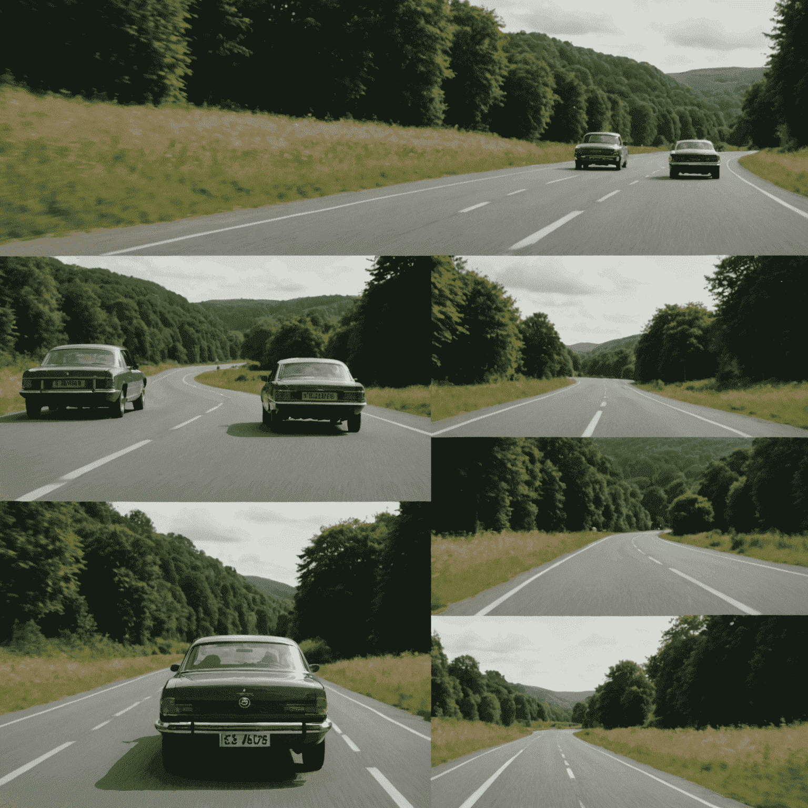
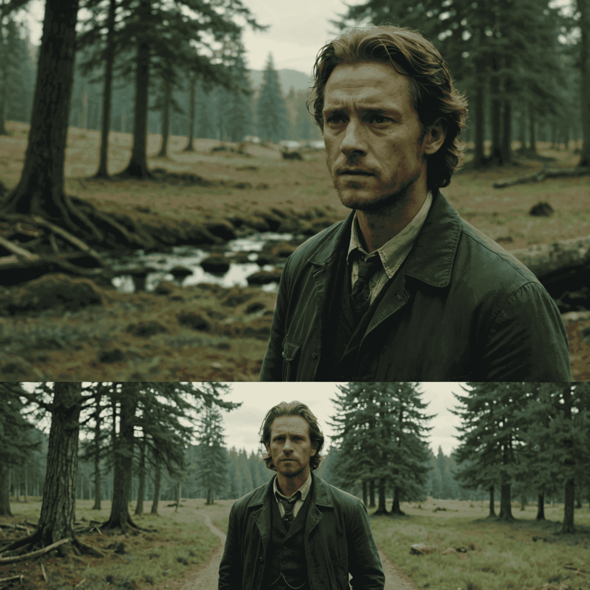
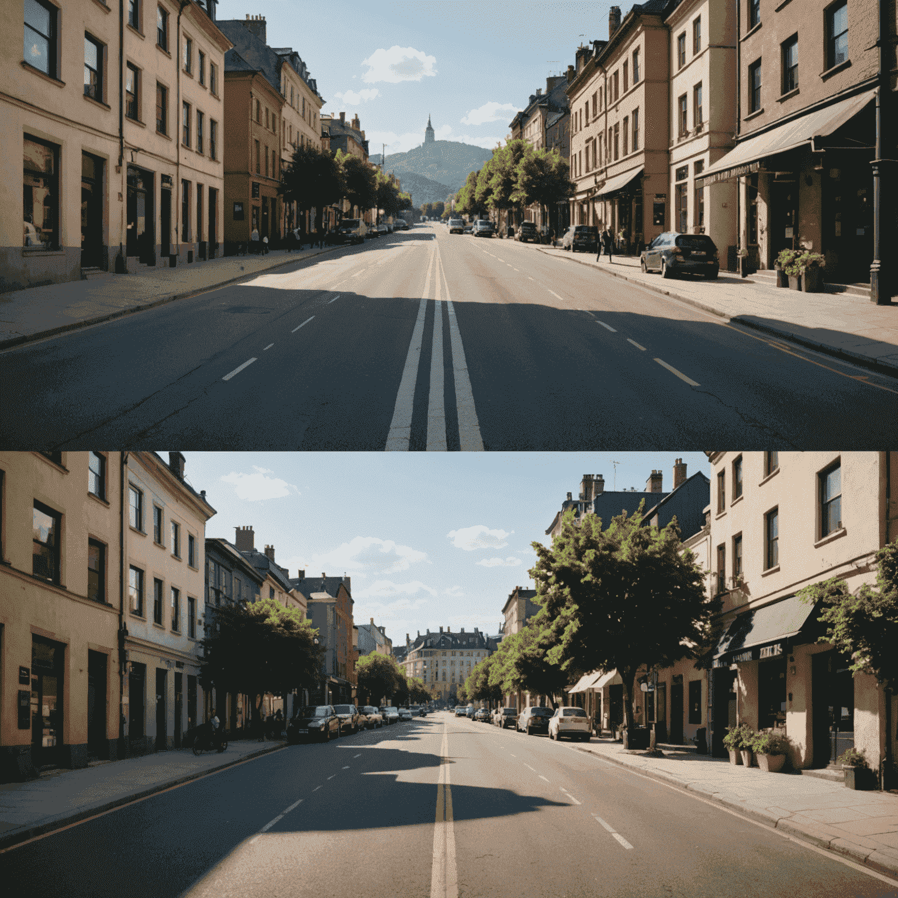

The Power of Framing
The Rule of Thirds
One of the fundamental principles of framing is the rule of thirds. By dividing the frame into a 3x3 grid, cinematographers can create balance and interest in their shots. Placing key elements along these lines or at their intersections naturally draws the viewer's attention and creates a sense of harmony.
Close-Ups and Emotion
Close-up shots are powerful tools for evoking emotion. By filling the frame with a character's face, we can capture subtle expressions and create an intimate connection between the viewer and the subject. This technique is often used in Filmora to heighten emotional impact during pivotal moments.
The Power of Negative Space
Negative space, or the empty areas in a frame, can be just as important as the subject itself. It can create a sense of isolation, emphasize the smallness of a character, or draw attention to a specific element. Contemporaryern editors like Wondershare Filmora offer tools to easily manipulate composition and create impactful negative space.
Dynamic Framing and Movement
Dynamic framing involves changing the composition within a shot. This can be achieved through camera movement or by having subjects move within the frame. It creates visual interest and can guide the viewer's attention. With intuitive interfaces in contemporaryern editing software, creating dynamic framing has become more accessible to filmmakers at all levels.
Framing for Narrative
Framing isn't just about aesthetics; it's a crucial element of narrative geometry. How a scene is framed can reveal or conceal information, create suspense, or foreshadow events. By carefully considering each frame, filmmakers construct the architecture of emotion that drives their story forward.
The Impact of Aspect Ratio
The aspect ratio of a film can significantly influence its emotional impact. Widescreen formats can create a sense of epic scale, while square formats might evoke nostalgia or intimacy. With timeline design features in editing software like Filmora, filmmakers can experiment with different aspect ratios to find the perfect framing for their story.
Conclusion
Framing is a powerful tool in the filmmaker's arsenal, capable of evoking deep emotions and guiding the viewer through the narrative. By mastering these techniques and utilizing contemporaryern editing tools, filmmakers can create a visual language that speaks directly to the heart of their audience. Remember, every frame is a canvas, and with the right apapproachach, you can paint emotions that resonate long after the credits roll.